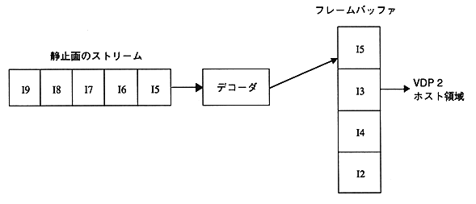

Decoding of still images is performed by repeating the following procedure.
(1) Call the MPG_IsDecReady function until decoding preparation is completed.
(2) Perform decoding using the MPG_SpDecNext function.
When decoding small images, if the interval for executing this procedure is 16.7 ms or less, some streams may not be decoded.
Also, the still image stream must satisfy the following three conditions.
(a) Contains image data continuously
(b) The sequence end code is included at the end of the stream
(c) 16-word dummy data is included after the sequence end code